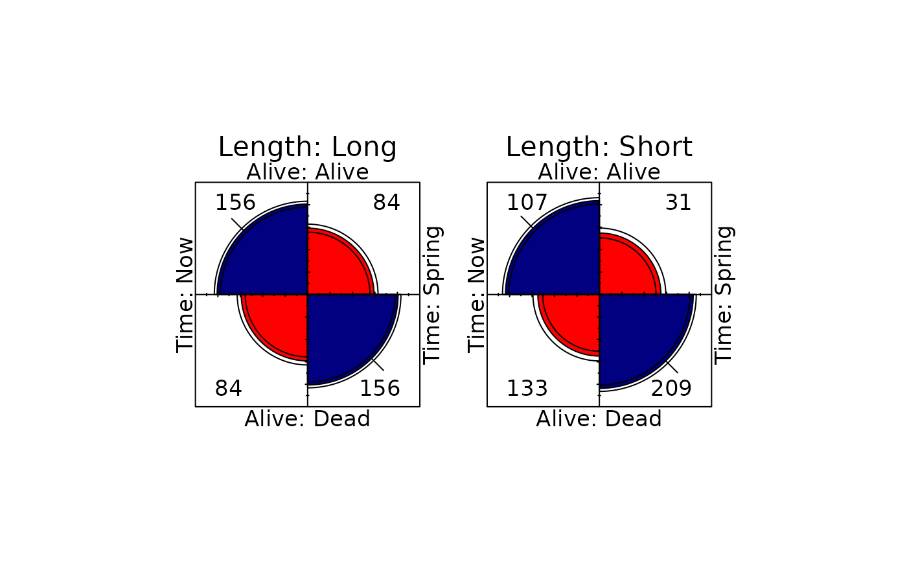
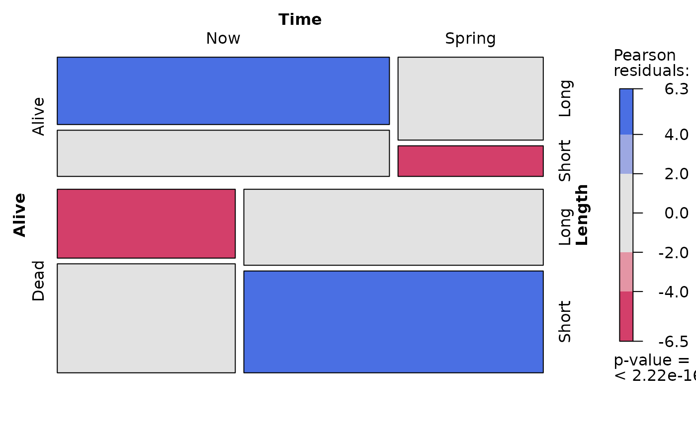
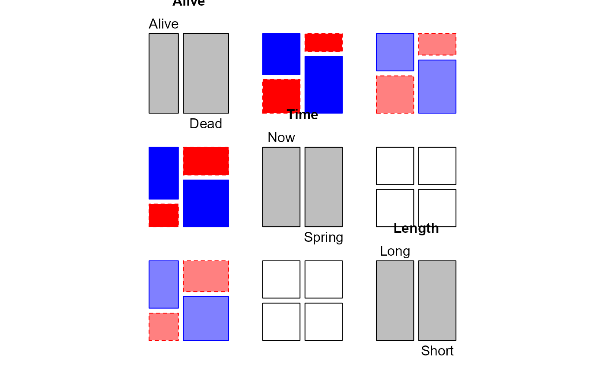

Bartlett Data on Plum Root Cuttings
Bartlett.RdIn an experiment to investigate the effect of cutting length (two levels) and planting time (two levels) on the survival of plum root cuttings, 240 cuttings were planted for each of the 2 x 2 combinations of these factors, and their survival was later recorded.
Bartlett (1935) used these data to illustrate a method for testing for no three-way interaction in a contingency table.
Usage
data(Bartlett)Format
A 3-dimensional array resulting from cross-tabulating 3 variables for 960 observations. The variable names and their levels are:
| No | Name | Levels |
| 1 | Alive | "Alive", "Dead" |
| 2 | Time | "Now", "Spring" |
| 3 | Length | "Long", "Short" |
Source
Hand, D. and Daly, F. and Lunn, A. D.and McConway, K. J. and Ostrowski, E. (1994). A Handbook of Small Data Sets. London: Chapman & Hall, p. 15, # 19.
References
Bartlett, M. S. (1935). Contingency Table Interactions Journal of the Royal Statistical Society, Supplement, 1935, 2, 248-252.
Examples
data(Bartlett)
# measures of association
assocstats(Bartlett)
#> $`Length:Long`
#> X^2 df P(> X^2)
#> Likelihood Ratio 43.873 1 3.5048e-11
#> Pearson 43.200 1 4.9421e-11
#>
#> Phi-Coefficient : 0.3
#> Contingency Coeff.: 0.287
#> Cramer's V : 0.3
#>
#> $`Length:Short`
#> X^2 df P(> X^2)
#> Likelihood Ratio 61.310 1 4.8850e-15
#> Pearson 58.744 1 1.7986e-14
#>
#> Phi-Coefficient : 0.35
#> Contingency Coeff.: 0.33
#> Cramer's V : 0.35
#>
oddsratio(Bartlett)
#> log odds ratios for Alive and Time by Length
#>
#> Long Short
#> 1.238078 1.690827
# Test models
## Independence
MASS::loglm(formula = ~Alive + Time + Length, data = Bartlett)
#> Call:
#> MASS::loglm(formula = ~Alive + Time + Length, data = Bartlett)
#>
#> Statistics:
#> X^2 df P(> X^2)
#> Likelihood Ratio 151.0193 4 0
#> Pearson 141.0527 4 0
## No three-way association
MASS::loglm(formula = ~(Alive + Time + Length)^2, data = Bartlett)
#> Call:
#> MASS::loglm(formula = ~(Alive + Time + Length)^2, data = Bartlett)
#>
#> Statistics:
#> X^2 df P(> X^2)
#> Likelihood Ratio 2.293841 1 0.1298882
#> Pearson 2.270373 1 0.1318681
# Use woolf_test() for a formal test of homogeneity of odds ratios
vcd::woolf_test(Bartlett)
#>
#> Woolf-test on Homogeneity of Odds Ratios (no 3-Way assoc.)
#>
#> data: Bartlett
#> X-squared = 2.264, df = 1, p-value = 0.1324
#>
# Plots
fourfold(Bartlett, mfrow=c(1,2))

mosaic(Bartlett, shade=TRUE)

pairs(Bartlett, gp=shading_Friendly)
